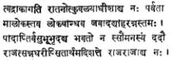
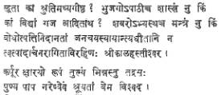

REVIEWS
Welcome the Moon rise–Forty
poems by Karan Singh. Published by Asia Publishing House, Bombay. Pages 43.
The Captive–Forty-six
poems by Shankar Mokashi-Punekar with a preface by Sir Herbert Read. Published
by Popular Prakashan, Bombay. Pages 71.
In Life’s Temple by
Vinayak Krishna Gokak. Published by Blackie & Son, Ltd. Pages 87.
The
late Prof. V. N. Bhushan, in his introduction to The Peacock Lute, an
anthology of poems in English by Indian Writers, edited and published by him as
long ago as in 1945, declared that ‘The Modern Renaissance that has been at
work in the country (India) during the last one century has been speeding up
the sentiments and sacraments of our race, and revitalising the life and
outlook of the people...our intellectuals realise the fact that India should no
longer dwell in splendid isolation as of old, but be an important factor in the
vast international organisation in the modem world…It is this unique national
and at the same time international experience that the modern Indian poets
writing in English express in their poetry.”
India
has since attained political independence, and recorded considerable progress
in her efforts–to modernise her economy to raise the standard of life of
her teeming millions, to take her proper place in the comity of nations, to
develop a national attitude and policy in international affairs, make her voice
felt in international sphere, and endeavour to make her own contribution to the
peace and progress of the human race.
Each
of the three volumes under review constitutes a no contribution to Indo-Anglian
poetry thus defined, by Prof. Bhushan, representing as it does, each in its own
way, the modern Indian mind, true in essentials to its ancient inheritance, and
at the time alive, and adapting itself, to the conditions of life in the modern
world. Each of the three authors has had a distinguished academic career and is
occupying a responsible position in his profession as well as in the public
life of the country. Each of them has already to his credit, a considerable
volume of poetic output, in English as well as in his Indian mother-tongue.
Herbert
Read, the renowned English critic, in a preface contributed by him to the
volume of poems, under review, by Dr. Mokashi, records his admiration for the
felicity with which the Indian poet expresses himself in contemporary English
idiom, and for the profound philosophy of life expressed eloquently in some of
his poems. The authors, of the other two of the three volumes under review,
deserve the compliments no less, with regard to the language as well as themes
of their poems.
Taking
the three volumes together, here is plenty and plenty of variety, of good
poetry, typical Indo-Anglian poetry of remarkably high quality. Here are poems
on the contemporary Indian scene and poems which reveal man as a pilgrim of
eternity; poems which explore the meaning of life in many contexts and in the
context of the poet’s personality; poems which are creations in English and
others which are translations (in the volume of Mr. Gokak) poems that are
romantic, with others that are modernist. In every poem, almost, the experience
communicated is genuine and significant, the philosophy of life expressed
consistent, characteristic of modern India and profound, the expression elegant
and
eloquent.
We
commend the publications to all lovers of English poetry in India and abroad,
with pride in the high quality of the intellectual fare presented in them, and
confidence that it will win the appreciation of all disinterested lovers of
poetry and genuine students of the modern Indian mind. The publications augur a
bright future for Indo-Anglian poetry in the times to come.
–M. SIVAKAMAYYA
Francis William Rain by
Keshav Mutalik. Published by the University of Bombay, University Buildings,
Fort, Bombay-I. Pp.207. Price Rs. 7.
As
a result of the British rule in India, a series of Englishmen came to India for
the service of the Company and later of the Crown. Many an Englishman tried his
hand at creative writing and hence we have a literature, which might harmlessly
be called Anglo-Indian literature. The great names are but few in Anglo-Indian
literature because a sense of exile pervades the bulk of the writing. The
Englishman looked upon India as the land that atomised his family–the
‘land of regrets’–and so the mood of sorrow and frustration never left
his mind. Thus, most Anglo Indian writers used writing to voice their grief and
bitterness, while there were others who thought that writing was after all not
in the ‘bond’ and took to it rather half-heartedly. It is, however, when we
turn to writers like Sir William Jones and John Leyden, Mrs. F. A. Steel and
Rudyard Kipling, Sir Edwin Arnold and F. W. Bain that we find Anglo-Indian
literature exceeding local limitations and achieving a measure of lasting
purpose and validity. It was these and a few other writers that could not
merely adjust themselves to the new surroundings, but cultivate a genuine love
for the land and its culture.
F.
W. Bain was professor of History and Economics and later Principal of the
Deccan College, Poona, for many years, in the early decades of
the present century. He was a great teacher who could bring an
original mind to bear upon his subject and whose teaching rose
above the narrow confines of syllabus and examination, and
became real and true liberal education. He was an administrator who wore his
authority lightly and was adored by his students and colleagues: ‘on this side
idolatry.’
Bain
had a versatile mind and a variety of interests, and his achievement too is
many-sided. He developed an intimate contact with Sanskirt literature and Hindu
mysticism. He wrote many stories, which read like Sanskirt stories in sensitive
translation, and the prefaces to these stories are a class by themselves in their
multi-coloured brilliance and serve to give us an idea of the stature of the
man and the nature of his art.
Mr.
Mutalik deals with the life of Bain at some length–birth and parentage
to last days–and seems to have taken enormous pains to secure his material.
He assesses the achievement of Bain as teacher and scholar
and the notable part he played in the contemporary cultural
life of Poona. The three chapters on Indian Stories, where the technique
and contribution of Bain are discussed, make interesting reading, and the
Appendices contain a number of letters which give useful insights into Bain’s
life and writings. The photographs are an impressive addition to the book and
the bibliography is good.
The book is probably documented to a fault and the quotations are often long and some are even repeated. One feels, however, that in spite or these overlappings and overloadings, a convincing portrait of Bain emerges, which is a good enough miniature of his colossal personality. The book is, on the whole, a laudable attempt in biographical writing.
–
L. S. R. KRISHNA SASTRY
Raft Ahmed Kidwai–A
memoir of his life and times–by Ajit Prasad Jain. Asia Publishing House.
Pages 130. Price Rs. 14.
Ministers
and civil servants, harassed by the perpetual problem of food shortages, must
be thinking now and then of the late Mr. Rafi Ahmed Kidwai, a successful Food
Minister, if ever there was one. But no one really knew the secret of his
success. Not even himself, perhaps, though he often took courage in both his hands
and did something that few others would dare to do. And luck used to favour him
in nine times out of ten. It was so with food decontrol in the early fifties.
Also with the Night Air Mail and quite a few other schemes that came like
rabbits from the magician’s hat. Rafi was a wizard in Indian politics, and the
author has been one of the staunchest ‘Rafians’ but even he succeeds (in this
book) more in testifying to this magic than in analysing its components.
But,
Mr. Jain tries his best. Rafi’s faith in human nature is something that draws
admiration. He was a shrewd judge of men, their foibles and all, without being
a cynic like much ‘wiser’ and more experienced men. Interesting anecdotes are
related in one chapter which is the most readable and revealing part of the
book. Knowing that a young man was a thief he would harbour him as a guest and
let him steal his watch besides! When the police haul him up in the court, he
ends up by giving evidence in his favour and getting him released. All this, because
he knew that the poor fellow was down and out and needed the help so badly. So
many lame dogs did he help over the stiles. His approach was essentially human.
His contacts with party workers, like those of Mr. Kamaraj, were intimate and
personal, and their loyalty to him was unshakable, He was far better in
lobbying than in lecturing, in getting things done than in outlining the
principles behind. Nehru and he loved each other deeply, without relying on
each other’s judgment. But they worked together smoothly and to great
advantage. He knew no feelings, of creed and community, which could be greater
than his country.
The
account given here of Rafi’s life and work by the author is rather scrappy and
disjointed, though presumably first hand and authentic in most cases. It bears
all the marks of hurried thinking, slipshod drafting and inadequate editing. It
is more likely to have been dictated to a steno than written in the author’s
study. It also alternates between a political biography and a topic pamphlet
that seeks to settle personal scores.
–“CHITRAGUPTA”
The Eternal Law by
Sri R. Krishnaswamy Aiyar. Pages 172. Price Rs. 4. Publishers: Ganesh & Co.
(Madras) Private Ltd. Madras-17.
Emanating
from the pen of Sri Krishnaswamy Aiyar, a disciple of the Head of the Sringeri
Mutt, and an author of the very popular books, Dialogues with the Guru, The
Call of the Jagat Guru, and Sparks from a divine anvil etc., this
book is of immense educative value to every student of Hindu religion, who
wants to have a clear idea of the basic principles of Sanatana Dharma.
“All
beings have a triple objective, viz., to live, to know, and to enjoy.” God, the
creator of this universe must have enunciated the means to realise these
objectives, and those means must be coeval with life and beneficial to all
beings of all times and climes. The enunciation of such means must also be
eternal and universal. The source of knowledge of these means can be none else
than the perfect knowledge of the omniscient God, whose teachings are found in
the Vedas which, being inseparable from Him, must also be eternal. So the Law
or Dharma enunciated in the Vedas is the Eternal law, otherwise known as Sanatana
Dharma.
Whatever is caused is impermanent and imperfect,
and if perfect existence, knowledge or happiness is conceivable, it cannot be
obtained. To have a thing, without obtaining it, can be possible, only when it
is available already with us. So the assumption that we have not got perfect
knowledge, etc., and that we must obtain them is inherently wrong, and this
basic misconception is known as Avidya. The eradication of this Avidya
is the aim of Sanatana Dharma.
The three bodies: Sthula, Sukshma, and Karana sariras, which are Avidya and its creatures, screen our perfect nature from ourselves. To destroy their screening capacity, three paths, corresponding to the three bodies are prescribed. These are Karma, Bhakti and Jnana respectively.
With
this background, the author explains in a thoroughly logical manner the
significance of all Karmas, Acharas, and restrictions, enjoined in
our sastras. The law of Karma and rebirth, the correlation of Karma,
Bhakti, and Jnana, are all thoroughly dealt with. Every point herein
is explained with a suitable example drawn from our everyday life.
Every
publication of Ganesh Company brings with it a fund of knowledge relating to
Hindu culture and wisdom, and this book is no exception. Every Hindu and every
critic of traditional Hinduism should read this book before
forming his opinion about Hinduism.
–B.
KUTAMBA RAO
Life World
Library–South-East Asia: by Stanley Karnow and the Editors
of Life. Time-Life International, Netherland. N. V. Pp. 160.
Hyderabad- The City We
Live in: Press Reporters’ Guild, IV-S-40, Fateh
Maidan Stadium, Hyderabad-1. Pp. 172. Price Rs. 5.
Konarka: by
Vijayatunga. Rs. 3. Publications Division. Delhi-6.
West Bengal and
Orissa: Rs. 4-50.
Utar Pradesh: Rs. 4-25 .
Bihar: Three
Rupees.–Issued on behalf of the Department of Tourism, by the Director,
Publications Division, Delhi-6.
Places
are among the most interesting things to read about, the writer responsible for
the book is one who knows his job. The human angle is very important here for
it is as much about people as about the places, rather more so. The human angle
is a specialty with the Life-Time group of journals, though the obvious slant
of the news magazine is often too blatant to be acceptable a dispassionate (in
so far as any man can be that) student of world affairs, This does not,
however, detract from the news service (purely from a technical, journalistic
point of view of smartness and efficiency) of the Time magazine or the
standard of photography set for itself by the Life International. All
these undoubted resources in news coverage and crack photography have been used
to good effect in the planning of the ‘Life World Library’, which has already
seen eight volumes or so on a number of the leading countries of Europe
(Russia, Germany, France, Britain and Italy), and Japan
and Mexico. The volumes sell on the photos in colour and in
black and white, though the letterpress is not negligible.
The
complex mosaic of races, religions and political hues that is represented by
South-East Asia is vividly brought before the reader in the latest volume
covering the subject. The impact of Western civilisation on a medley of
oriental cultures, the free mixture of racial groups and the juxtaposition of
different religions (Hinduism and Buddhism, Islam and Christianity) have given
rise to varieties of social experience which are not easy to analyse and far
from easy for a neat classification. On the top of all this comes the
confrontation of European political institutions of the liberal type with the
Asian brand of world communism. Tungku Abdur Rahman and President Soekarno are
symbols of the two different forces at work in this part of the world. Bright
snapshots are given of the life and struggle of the different countries in this
part
of the world by the reporter as well as the cameraman. While the political
undertones can profitably be ignored at times, the story in
general can be read with absorbing interest, after one has done with the
pictures.
Nearer
home we have many examples of the confluence of cultures that can aptly
symbolise the Indian cultural pattern of unity in diversity. The city of
Hyderabad comes in handy for the purpose, though we need to know more deeply
about its real personality, in addition to its history and geography. An
eloquent portrait of this city by M. Chalapathi Rau is one of the highlights of
the souvenir brought out by the Press Reporters’ Guild of Hyderabad
(“Hyderabad–the city we live in.”) Here is his masterly summing up.
“...It
is not the geometry of the place but the psyche that stirs people, and
Hyderabad must, while buzzing with the noise of modernity, nurse its past, the
vanished glamour of Golkonda and the more ancient austerities of the Buddhist
University, so real even in its ruins. Hyderabad is the gateway between the
North and the South, a nursery of culture amidst tranquil lakes, and if the
North and the South can meet there, it will be the second capital of India in
fact, if not in name.” Iswara Dutt recalls his close association with some of
the leading personalities linked with the destinies of the city and the State,
while B. Ramakrishna Rao sets the cultural tradition in its
historical perspective. There are quite a few articles by well-known writers on
other aspects of Hyderabad, besides many photographs of places of interest in
and around the city.
If
tourism is to make larger strides in India, one at least of the subtler
requirements would be the appearance of attractive literature on the subject.
Shakespeare’s tiny birth-place has possibly better and more booklets on its own
glories than any place of tourist interest in India.
There are, of course, formidable tomes on Ajanta and Ellora, but we want
popular and reliable hand books on these and other places in
India. Vijayatunga’s slim monograph on Konarka strikes the golden mean between
authority and readability. He does quote chapter and verse in his support, but
takes care not to clog his narrative with too many learned extracts. The
booklet is profusely illustrated. The neat and handy volumes on U. P., Bihar,
West Bengal and Orissa are also well-documented and attractively illustrated,
with photographs in colour and in black and white, as also some pretty line
drawings. They may yet be nowhere near similar publications available in the
West, but they are sure to be useful (the data are good enough) and good value
for the Price.
–D.
Anjaneyulu
The Dhamma Pada: Thanslated
by Irving Babbit with an essay on “Buddha and the Occident.” Pages 10+122.
Price $ 1.45. Publishers: New Directions Publishing Corporation, 333, Sixth
Avenue, New York 14.
The Dhamma Pada, a
book of all times, is a collection of 423 verses in Pali language, divided into
26 chapters. These verses, attributed to Buddha, contain the quintessence of
the Buddhistic philosophy. These ethical teachings have a universal appeal and
many of them are analogous to those found in the didactic and philosophical
literature in Sanskrit. e.g., “If a fool be associated with a wise man even all
his life, he will perceive the truth as little as a spoon perceives the taste
of a soup (p. 12). Self is the lord of self, self is the refuge of self,
therefore curb theyself, as the merchant curbs a good horse (p.56). What is the
use of thy mated locks, O fool! of what avail thy (raiment of) antelope skin?
Within thee there is ravening, but outside thou makest clean p. 58)”
In
the scholarly essay on “Buddha and the Occident” Buddhism is defended from the
assaults of occidental thinkers. Their mis-apprehensions regarding the
doctrines of Buddhism are removed, and it is presented in a clear perspective.
Buddhism is compared with Christianity, Vedantism, Stoicism, Sankhya and Yoga,
and the views of many western thinkers like Plato, Kant, and Hegel. The
theories of Behaviourists, Psychoanalysts and the moderns also are relevantly
brought in here in this context. Differences between Mahayana and Hinayana
are also briefly explained.
Buddha,
Babbit says, is comparatively free from casuistry, obscurantism and
intolerance. He is a critical and experimental supernaturalist and is humble
without being modest.
The
stoic is monist and the Buddhist is like a Christian, an uncompromising
Christian, a dualist, because of the contrast he establishes between the
expansive desires and a will that is felt with reference to these desires as a
will to refrain (p. 91). By exercising this quality of will a man may gradually
put aside what is impermanent in favour of what is more permanent and finally
escape from impermanence altogether. The chief virtue for Buddha is therefore
the putting forth of this quality of effort, spiritual consciousness (p. 91).
The stoic is theoretic optimist whereas Buddha is untheoretic and insistent
upon the fact of evil (p. 82).
Buddha’s
attitude towards the ‘Soul’ differs decisively from that of the Vedantists and
the doctrine of Plato. His objection to those who assert a soul and other
similar entities is not metaphysical practical (p. 84). Buddha dislikes mere
speculation.
Buddha
is not a saviour in the full Christian sense, because Buddha believes that Self
is the lord of self and gives prominence to Will whereas a Christian associates
this will with divine grace.
Babbit
explains the true significance of some technical terms like Nirvana, Karma, self-love,
peace, and meditation. Nirvana, he says, is extinction of desires.
Negatively it is escape from the flux and positively the immortal element (p.
96). Peace in which the doctrine culminates is not inert but active (p. 98).
While explaining the term meditation, difference between the views of Buddhists
and mystics is also explained.
In
the last few pages, Babbit deals with the question of war and peace between
nations. He says “Like the Christian, the Buddhist would begin at the centre–with
the issue of war and peace in the heart of the individual. Any conquest that
the individual may win over his own inordinate desires will reflect at once in
contact with other men...in the field of political action.” (p.111) and herein
is the significance of Buddha’s message to the war-torn modern world. We
heartily commend this book to all seekers of peace internal and external.
Vasucharitram (in
Samskrit): Translated from Telugu by Kalahasti Kavi. Editor: Dr. B. Rama Raju,
Osmania University. Pages 32+ 196. Price Rs. 4. Can be had from U. G. C. Unit,
Osmania University, Hyderabad.
Ramarajabbushana
(1500-1580) is a poet of unique fame. His Vasucharitra a Telugu
Prabandha was translated into Sanskrit, Tamil, Kannada and into English also.
His mastery of slesha (double entendre) manifested in his narration of
two stories in one and the same breath, his talent in music pressed into
service in his handling of Telugu metres, and his poetic imagination and fancy
revealed in his delineation of sentiments, won him laurels from all critics.
Kalahasti
Kavi, who, according to the editor of this book, might have born about 1574 A.
D., translated this Vasucharitra into Sanskrit in verses interspersed
with prose. Like all other translators Kalahasti Kavi also improved upon the
original in some places, and attempted to bring out, in his translation, all
the charm of the dhvanis, sleshas and yamakams found in
the original, though he could not succeed in his endeavours in those places,
where that charm in the original is peculiar to Telugu idiom and words alone.
Bearing in mind the difficulties in the translation of a work full of sleshas
and yamakas, we must concede, Kalahasti Kavi succeeded in his
undertaking. A note-worthy feature in this translation is the poet, in many
places, could retain in his Sanskrit verses the yatis and prasas
that are peculiar to Telugu prosody. A chaste and lucid language, smooth
diction and a variety of metres–all these bear testimony to the high
scholarship and workmanship of the poet, which can be seen throughout his work.
A few verses may be quoted here.

(3.182)

(3.70)
The
figure of speech and the double entendre in the original are aptly brought out
in the above two verses in order.
Our
praise goes to Dr. B. Rama Raju also for his critic introductions in English
and Telugu, and the care he has taken in editing this work. In the
introduction, he deals with the date and personality of the poet Kalahasti, and
compares the translation with the original in an exhaustive manner. The lacunae
in the manuscript are completed and the relevant number of the Telugu verse is
given against each Sanskrit verse facilitating ready reference of
the original thereby.
Our
commendations go to the publishers and the learned editor of this work. How we
wish this book is prescribed for study to the University students.
Sataka Saptakam: Translated
from Telugu into Samskrit by Sri S. T. G. Varadacharya, M. A. (Hons.),
Ex-Principal, Sri Narasimha Samskrita Kalasala, Chittiguduru and A. J.
Kalasala, Machilipatnam. Pages 133. Re. 1.50. Published by the Andhra Sahitya
Akademi, Hyderabad.
This
is a collection of seven satakams in Samskrit–(Sumati,
Bhaskara, Sri Kalahastisvara, Dasaradhi, Vemana, Sri Krishna, and Sri
Narasimha) translated from Telugu. Some of these are didactic while others are
devotional, though here and there, satire also is not lacking. Once these were
so popular that all school-going children in Andhra Pradesh had one or two of
these satakams on their lips.
The
translations are so well done that in all respects they not only preserve the
charm and beauty of the original, but also appear as though they were original
writings in Samskrit. The very lucid language, felicitous phraseology, splendid
syntax, sweet diction, choice use of verbs–all
these go to embellish the work in full. Mastery of verbal inflexion and
verbalism are reflected in every verse it is really a pleasure to read these
satakams, wherein various metres are also used appropriately.
Two
verses cited here.

(p. 37) (p.
82)
By
publishing these translations the Sahitya Akadami also had done an unique
service to the Telugu genius and culture.
–B.
KUTUMBA RAO
NOTE
Please
note the following in the article A True Historical Approach Vs. The Marxist
Historical Approach to “Hamlet” published in “Triveni” for January 1966.
Page
16–opening paragraph (12th line)–The phrase ‘Collection of Writings’ refers to Shakespeare
in a Changing World (London, 1964), a book edited by Arnold Kettle and
published in the tercentenary year of Shakespeare’s birth. The Marxist
historical approach criticised in the article appears in Arnold Kettle’s essay
‘From Hamlet to Lear’ published in this book.
Page
19–The para beginning with the sentence: “Neither Hamlet nor
Shakespeare, in the year 1600, could resolve in action even
tragically, the dilemma of a young man...” should be understood to be a quoted
passage from Arnold Kettle’s essay.
Page 21–Read
‘has’ for ‘as’ in the sixth line from the bottom of the page.
Page
23–Paras 3 and 4 have to
be read as the quoted passages from John Lawlor’s The Tragic sense in
Shakespeare.